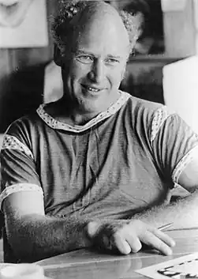

КІЗІ, Кен (Елтон) (Kesey, Ken (Elton) — 17.09.1935, Ла Хунта, шт. Колорадо — 10.11.2001, Юджин, шт. Орегон) — американський прозаїк.Кізі народився у Ла Хунті, а дитинство провів у містечку Юджин, що у штаті Орегон. Його батько успішно займався молочним бізнесом, заснувавши Корпорацію фермерів Юджина. Роки дитинства та юності Кізі пов'язані із риболовлею, полюванням, плаванням, заняттями боксом, боротьбою й американським футболом. Навчався Кізі в Орегонському університеті, грав у студентському театрі. На останньому курсі отримав стипендію Стенфордського університету, проте невдовзі він закинув навчання і приєднався до руху контркультури. У 1956 р. він одружився з Фей Хаксбі, яку кохав зі шкільних років. Написав роман "Звіринець"("Zoo"), який не був опублікований. Він присвячений громаді бітників Північного Узбережжя (Сан-Франциско), до якої належав сам К., їхнім мандрам країною та способу життя.
Кізі ще студентом брав участь в експериментах із використання сильнодіючих наркотиків для лікування психічних розладів. Після втручання влади ця небезпечна наукова програма була закрита, проте Кізі півроку працював санітаром і нічним сторожем у лікарні для ветеранів війни в Менлоу Парку, що у Каліфорнії, де ця програма проводилася. Він добровільно приймав там наркотики і доповідав про наслідки. Ці досліди у психіатричній лікарні, а також участь у "ЛСД-сесіях" сформували тло найвідомішого роману Кізі. "Політ над гніздом зозулі" ("One Flew Over Cuckoo's Nest", 1962). Сам письменник зазначав, що відтворив у ньому "реальних людей і справжні ситуації". Під час роботи над книгою К. вживав один із галюциногенів — пейот.
"Політ над гніздом зозулі" — трагіфарсова притча про бунт проти зневаження людської гідності у психіатричній лікарні, яка безперечно є метафорою всього американського суспільства. Кізі викриває соціальну систему, яка в ім'я середньостатистичного добробуту придушує все "нетипове" і незалежне. Назва твору — рядок із дитячої пісеньки, що запам'ятався оповідачу Бруму Бромдену на прізвисько "Шеф", велетню-напівіндіанцю, який прикидається глухонімим. Саме його образ Кізі вважав своїм найбільшим художнім досягненням. Бромден — шизофренік, і в його сприйнятті реальність і марення то зливаються, то подвоюються. Саме тому варіативність і неоднозначність є органічними у структурі цього твору. У клініці перебувають не тільки абсолютно хворі ("рослини"), а й люди вразливі та нестандартні. Єдиний притулок для їхньої змученої пам'яті — це галюцинація, тому вони шукають прихистку у стінах лікарні. У лікарні панує залізний порядок, а незмінною його хоронителькою є Старша сестра Ретчет. У світ клініки і світ оповідача входить дрібний злочинець, анархіст і веселун Рендал Патрік Макмерфі, котрий намагається змінити бюрократичну систему лікарні. У хворій свідомості Шефа конфлікт між сестрою Ретчет і Макмерфі переростає у битву добра та зла. Макмерфі стає жертвою репресивної системи. Він задумує втечу, однак після шаленої вечірки лікарі роблять йому лоботомію. Бромден душить його подушкою і втікає у Канаду. Суспільство і породжений ним порядок — "система", держава, "комбайн" і є, на думку Кізі, головним ворогом сучасної людини. К. переконаний у незавершеності людської особистості, більше того — у невизначеності, випадковості, хаотичності людської історії. Роман Кізі, як зазначає Т. Денисова, "допомагає збагнути сутність "чорного гумору" — зокрема його здатність висміювати самого себе та оцінювати суспільство як щось вороже особистості. Світ і людина зображені як такі, що втратили зміст. І тому гармонія, чи навіть сама можливість людського спілкування, стають привілеєм божевільних". У бродвейському театральному сезоні 1963— 1964 pp. з'явилася постановка за романом "Політ над гніздом зозулі" (інсценізація Д. Вассермана). Понад 80 вистав було зіграно у Корт Тіетр (у ролі Макмерфі виступив Кірк Дуглас). У 1975 р. М. Форман зняв фільм за романом Кізі, який став культовим (він здобув п'ять "Оскарів"). Роль Макмерфі блискуче зіграв Джек Ніколсон. Проте сам Кізі був незадоволений фільмом, звинуватив екранізаторів у спотворенні задуму і навіть звернувся із судовим позовом. Наступний роман Кізі — "Інколи я захоплююсь" ("'Sometimes a Great Notion", 1964) не мав успіху. Дія роману відбувається у лісозаготівельній бригаді і розгортається навколо стосунків двох братів — Хенка Стемпера і Дреґера, їхньої жорстокої сімейної ворожнечі. Мотиви, знайомі за першим романом Кізі, змальовуються на тлі провінційного містечка, якому загрожує екологічна катастрофа. Книга була екранізована у 1971 р. (режисер і виконавець головної ролі — Поль Ньюмен). Після роботи над романом Кізі надовго відійшов від літературної діяльності. Він організував групу "Веселі витівники" ("Merrie Pranksters"), оселився із комуною хіпі у Ла Хонді, що у Каліфорнії, разом із друзями мандрував Америкою та Мексикою. У 1965 p. Кізі заарештували за незаконне зберігання наркотиків. Він втік у Мексику, проте у 1967 р. його знайшли і відправили у США, де у в'язниці Сан Матео Каунті Джейл він відбув п'ятимісячний термін. Після цього бурхливого періоду Кізі зайнявся фермерською діяльністю, виховував чотирьох дітей і вів письменницький семінар в Орегонському університеті. У 70-х pp. Кізі повернувся у літературу, видав книги "Продається гараж Кізі" ("Kesey's Garage Sale", 1973), "Сім молитов бабусі Вітьє" ("Seven Prayers by Grandma Whittier", 1974-1979), "Ящик демона" ("Demon Box", 1986). До його пізніх творів належать дитяча книга "Білочка знайомиться з ведмедем" ("Little Tricker the Squirrel Meets Big Double the Bear", 1990), "Подальше розслідування" ("The Further Inquiry", 1990, спільно з P. Бевіртом), "Печери" ("Caverns", 1990; під псевдонімом О.Ю. Левон), "Морський лев" ("The Sea Lion, 1991"). "Пісня моряка" ("Sailor Song", 1992) є футуристичною повістю про рибацьке село Аляски і голівудську знімальну групу. Остання книга Кізі — "Проходить останній" ("Last go Around", 1994, спільно з К. Баббсом) присвячена відомому орегонському родео і написана у стилі масової літератури ("pulp fiction"). Помер Кізі внаслідок ускладнень після операції на рак печінки. Як літератор, Кізі асоціюється насамперед із романом "Політ над гніздом зозулі"; як постать культурологічна, він є символом американської повоєнної контркультури, "гуру" психоделічних наркотиків, діячем, котрий пов'язує "розбите покоління" 50-х із рухом хіпі 60-х років.